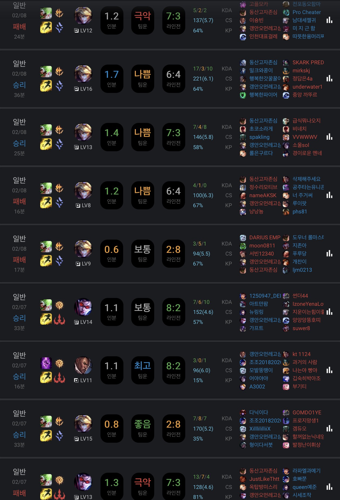

Promotion Match ( Bronze -> Silver )


승급전을 3번이라 치루게 되었다. 처음에는 패패승승패(였나..?)를 하게 되었다.
두 번쨰는 승리를 하나 받고 패패승패를 한 뒤 마지막 승급전은 2승을 받고 첫 판을 가볍게 이겨 Silver로 올라갔다.
승급전을 할 때마다 팀운이 너무 좋지 않았다. 물론 두번째 승급전일 때는 하지도 않던 파이크로 객기를 부리다가 내가 망치긴 했다...( 이 점은 반성한다)
그렇지만 이길만 하거나 라인전을 이겼어도 상체에서 설사가 흘러내려와 게임을 망친 것이 상당수를 차지한다.
그래도 세번째 승급전과 승급 탈락 후 다시 자격을 얻는 과정은 나름 만족스러운 부분이다.